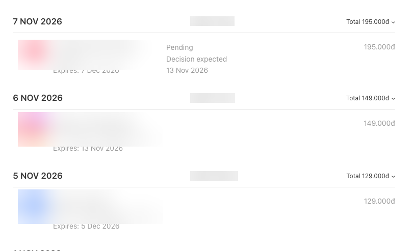
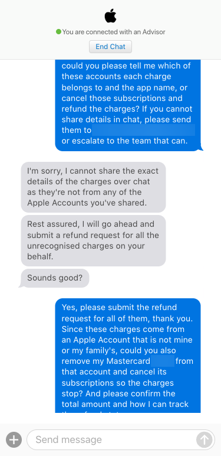
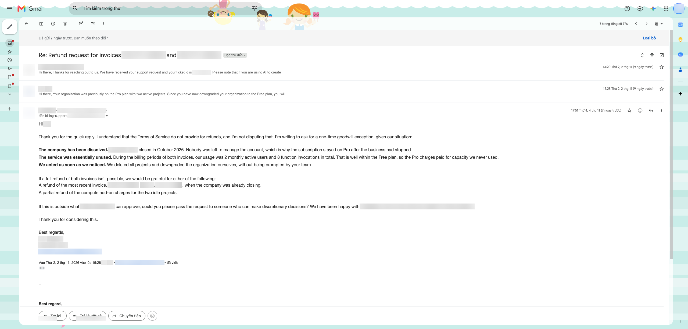

Bước 1: Rà soát cái gì
Trước tiên cần gom đúng ba nguồn dữ liệu. Một là email hóa đơn và email báo trừ tiền thẻ trong 6 tháng gần nhất. Hai là sao kê thẻ của cùng khoảng thời gian đó. Ba là lịch sử mua hàng trên kho ứng dụng của cả nhóm gia đình, không chỉ của riêng một tài khoản. Thiếu một trong ba nguồn này, bước đối chiếu sau sẽ bị hở.
Bước 2: Đối chiếu cái gì
Lấy từng khoản trên sao kê, tìm xem nó khớp với hóa đơn nào, thuộc app nào, đứng tên tài khoản nào. Khoản nào không tìm ra được nguồn thì đánh dấu riêng để xử lý ở bước sau. Có một bài học quan trọng: email báo trừ tiền không đủ để tin tưởng hoàn toàn, vì có khoản xuất hiện trên sao kê mà không hề có email báo trước đó. Nói cách khác, phải nhìn vào sao kê thật mới chắc, không được chỉ dựa vào hộp email.

Bước 3: Phân loại ra sao
Sau khi đối chiếu xong, xếp mỗi khoản vào một trong bốn nhóm. Nhóm một là đang trừ và vẫn cần dùng, giữ lại không cần làm gì. Nhóm hai là đang trừ nhưng thừa, do trùng với gói khác hoặc không còn dùng đến nữa. Nhóm ba là không rõ nguồn gốc, chưa biết thuộc về gói nào. Nhóm bốn là đã tắt từ trước, chỉ còn ghi nhận lại cho đầy đủ. Với nhóm thừa, việc hủy phải làm trên đúng tài khoản đã đăng ký ban đầu, hủy nhầm tài khoản thì gói vẫn tiếp tục chạy, dù hủy qua web hay qua thiết bị khác đều được miễn là đúng tài khoản.
Bước 4: Chat với ai, ở đâu
Với khoản không rõ nguồn gốc, liên hệ trực tiếp bộ phận hỗ trợ chính thức của kho ứng dụng, vào đúng mục thanh toán và gói đăng ký để chat. Với các kỳ gần đây đã trả nhưng muốn đòi lại: nếu mua qua Apple, dùng trang báo sự cố mua hàng của Apple, hoặc chat bộ phận hỗ trợ Apple ở mục thanh toán; nếu mua qua Google Play, vào mục lịch sử đặt hàng trên Google Play rồi gửi yêu cầu hoàn tiền ở đó. Trước khi chat, nên chuẩn bị sẵn danh sách ngày bị trừ tiền, số tiền từng lần, và ảnh sao kê đã che các thông tin riêng tư như số thẻ. Chuẩn bị trước giúp buổi chat đi nhanh và đúng trọng tâm hơn.

Bước 5: Email cái gì, cho ai
Với các dịch vụ web hoặc phần mềm trả theo tháng không qua kho ứng dụng, gửi thư trực tiếp cho bộ phận thanh toán của dịch vụ đó. Nội dung thư nên nói rõ: dịch vụ không còn dùng đến, đã tự hủy gói từ phía mình, xin được xem xét ngoại lệ một lần cho khoản vừa trừ. Quan trọng nhất là nói đúng sự thật về lý do, không nên dọa khiếu nại hay gây áp lực, vì đây là một lời xin, không phải một yêu cầu bắt buộc phải được chấp nhận.

Lời nhờ mẫu cho AI
Mỗi bước có thể nhờ AI làm bằng một câu lệnh ngắn, không cần điền thông tin thật vào câu lệnh:
Bước 1: "Quét hộp email của tôi trong 6 tháng gần nhất, lọc ra tất cả email có liên quan đến thanh toán, hóa đơn hoặc gia hạn gói đăng ký."
Bước 2: "Đối chiếu danh sách email vừa lọc với sao kê thẻ tôi gửi, chỉ ra khoản nào có hóa đơn khớp và khoản nào không có email báo trước."
Bước 3: "Xếp các khoản đã đối chiếu vào 4 nhóm: đang dùng và cần giữ, đang trừ mà thừa, không rõ nguồn, đã tắt."
Bước 4: "Soạn sẵn một danh sách ngắn gồm ngày bị trừ tiền và số tiền từng lần, để tôi gửi cho bộ phận hỗ trợ khi chat."
Bước 5: "Viết một email xin hoàn tiền, giọng lịch sự, nói đúng sự thật lý do, không dùng lời đe dọa."
Lưu ý an toàn
AI chỉ nên đọc dữ liệu và soạn nội dung giúp, còn việc bấm hủy gói hay đăng nhập vào các trang thanh toán thì tự mình làm, không giao hẳn quyền đó cho AI. Trước khi gửi ảnh sao kê cho bất kỳ ai, luôn che số thẻ và các thông tin riêng tư khác.
Muốn có một đội AI làm việc này cho mình? Inbox cho chúng mình.
Để lại Zalo Follow trên ThreadsMuốn tự dựng đội AI trước? Xem hướng dẫn tự dựng đội AI chi phí thấp.
Cập nhật 11/11/2026.